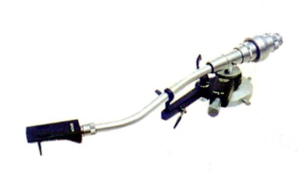
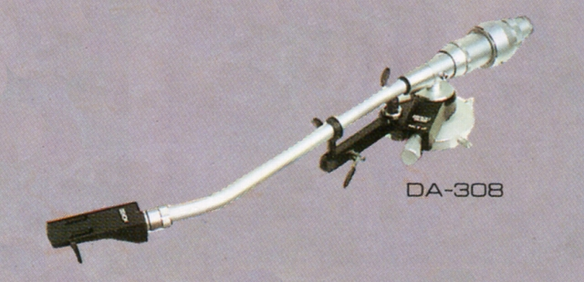
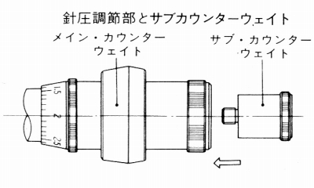

DA-308


■価格 40,000円
■型式 スタティックバランス・ダイナミックダンピング型
■全長 380�o
■実行長 282�o
■オーバー・ハング 12.5�o
■トラッキングエラー 2゜（最大）
■針圧範囲 0〜2.5g 0.1gステップ
■アーム高さ 42〜70�o
■適合カートリッジ重量 5〜15g 15〜25g（サブウェイト使用）
■線間容量
■発売 1978年4月
■販売終了 1990年
■備考 価格は1978年頃のもの
DA-307の設計ポリシーを受け継いだダイナミック・ダンピング機構、
無接触式インサイドフォースキャンセラー採用モデル。
付属シェルはマグネシウム合金+粘弾性体のPCL-7。
オイルダンプ式アームリフター、低容量コード付き
姉妹モデルにショートタイプのDA-309がある。
